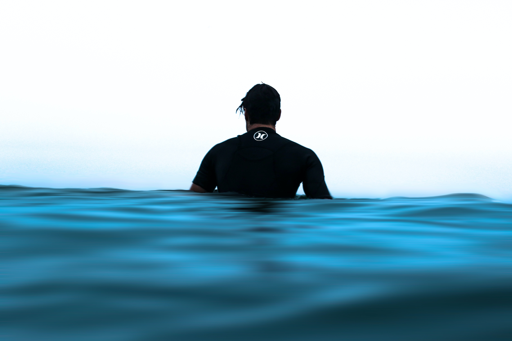
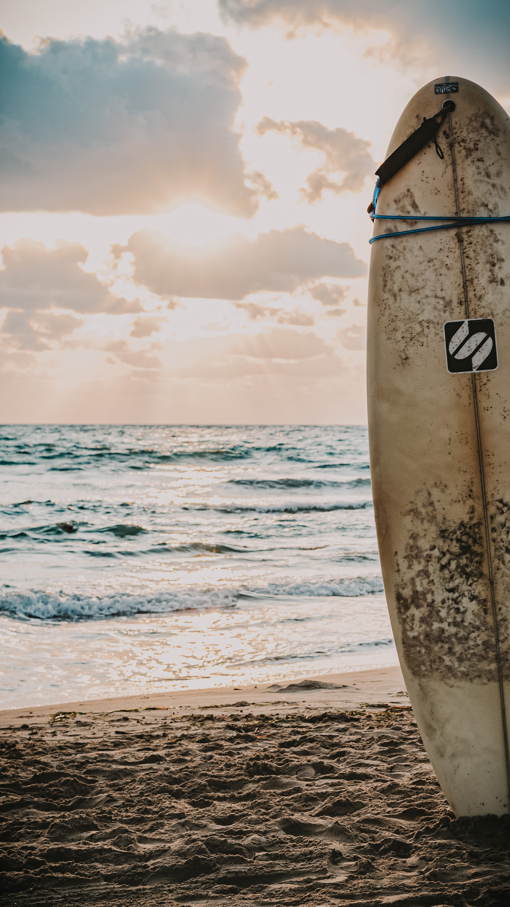
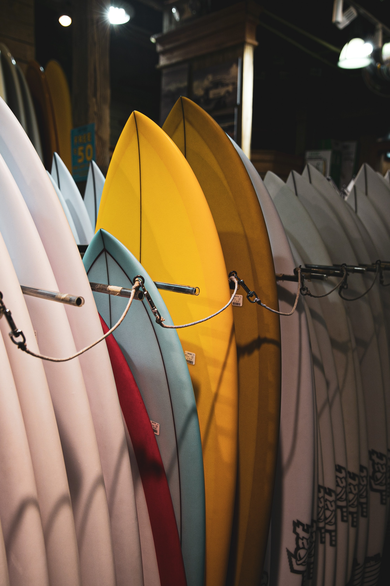
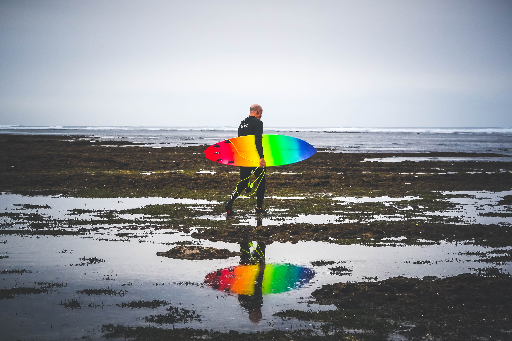

Surfing is a surface water sport in which an individual, a surfer, uses a board to ride on the forward section, or face, of a moving wave of water, which usually carries the surfer towards the shore. Waves suitable for surfing are primarily found on ocean shores, but can also be found in standing waves in the open ocean, in lakes, in rivers in the form of a tidal bore, or in wave pools.
Surf With Passion


"Three major subdivisions within stand-up surfing are stand-up paddling, long boarding and short boarding with several major differences including the board design and length, the riding style and the kind of wave that is ridden"


Similar to a young John Florence, Czermak is able to casually toy with the drop on backless Chopes bombs and stand tall in the face of literal danger. While this entire edit is full of wildly impressive surfing, the final wave, at 3:18, is one of the most well-ridden waves to go down at Teahupo’o this season.